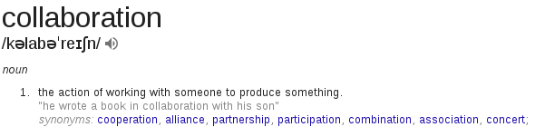

Welcome to the DevOps Blog.
This is a simple blog I've created, sparked by the concept of DevOps as collaborative idea as a fast growing and vast topic. The most common question is ...
What is DevOps?
What is DevOps? Although we think we're here because we already know, do we really? To most the term DevOps has a much broader meaning that is seems almost made-up, and indeed at some point, it was. It was needed.
If you do a google search for what is devops you'll come across the following definition:
" DevOps (development and operations) is an enterprise software development phrase used to mean a type of agile relationship between development and IT operations. The goal of DevOps is to change and improve the relationship by advocating better communication and collaboration between these two business units."
So what does all the business jargon above mean? Well, it's opinion based really. If you ask 10 different people what devops means to them, I assure that you'll get 10 different answers really drilling down to the same thing ... Collaboration. 